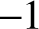

Mistakes are the portals of discovery.
—James Joyce (1882–1941)
Testing is a critically important element of systems development, and one that typically gets insufficient attention in computer science education. In Nand to Tetris we take testing very seriously. We believe that before one sets out to develop a new hardware or software module P, one must first develop a module T designed to test it. Further, T should be part of P’s development’s contract. Therefore, for every chip or software system specified in this book, we supply official test programs, written by us. Although you are welcome to test your work in any way you see fit, the contract is such that, ultimately, your implementation must pass our tests.
In order to streamline the definition and execution of the numerous tests scattered all over the book projects, we designed a uniform test description language. This language works almost the same across all the relevant tools supplied in Nand to Tetris: the hardware simulator used for simulating and testing chips written in HDL, the CPU emulator used for simulating and testing machine language programs, and the VM emulator used for simulating and testing programs written in the VM language, which are typically compiled Jack programs.
Every one of these simulators features a GUI that enables testing the loaded chip or program interactively, or batch-style, using a test script. A test script is a sequence of commands that load a hardware or software module into the relevant simulator and subject the module to a series of preplanned testing scenarios. In addition, the test scripts feature commands for printing the test results and comparing them to desired results, as defined in supplied compare files. In sum, a test script enables a systematic, replicable, and documented testing of the underlying code—an invaluable requirement in any hardware or software development project.
In Nand to Tetris, we don’t expect learners to write test scripts. All the test scripts necessary to test all the hardware and software modules mentioned in the book are supplied with the project materials. Thus, the purpose of this appendix is not to teach you how to write test scripts but rather to help you understand the syntax and logic of the supplied test scripts. Of course, you are welcome to customize the supplied scripts and create new ones, as you please.
The following usage guidelines are applicable to all the software tools and test scripts.
File format and usage: The act of testing a hardware or software module involves four types of files. Although not required, we recommend that all four files have the same prefix (file name):
All these files should be kept in the same folder, which can be conveniently named Xxx. In the documentation and descriptions of all the simulators, the term “current folder” refers to the folder from which the last file has been opened in the simulator environment.
White space: Space characters, newline characters, and comments in test scripts (Xxx.tst files) are ignored. The following comment formats can appear in test scripts:
Test scripts are not case-sensitive, except for file and folder names.
Usage: For each hardware or software module Xxx in Nand to Tetris we supply a script file Xxx.tst and a compare file Xxx.cmp. These files are designed to test your implementation of Xxx. In some cases, we also supply a skeletal version of Xxx, for example, an HDL interface with a missing implementation. All the files in all the projects are plain text files that should be viewed and edited using plain text editors.
Typically, you will start a simulation session by loading the supplied Xxx.tst script file into the relevant simulator. The first command in the script typically loads the code stored in the tested module Xxx. Next, optionally, come commands that initialize an output file and specify a compare file. The remaining commands in the script run the actual tests.
Simulation controls: Each one of the supplied simulators features a set of menus and icons for controlling the simulation.
Note that the simulator’s icons listed above don’t “run the code.” Rather, they run the test script, which runs the code.
The supplied hardware simulator is designed for testing and simulating chip definitions written in the Hardware Description Language (HDL) described in appendix 2. Chapter 1 provides essential background on chip development and testing; thus, we recommend reading it first.
Example: Figure A2.1 in appendix 2 presents an Eq3 chip, designed to check whether three 1-bit inputs are equal. Figure A3.1 presents Eq3.tst, a script designed to test the chip, and Eq3.cmp, a compare file containing the expected output of this test.
Figure A3.1 Test script and compare file (example).
A test script normally starts with some setup commands, followed by a series of simulation steps, each ending with a semicolon. A simulation step typically instructs the simulator to bind the chip’s input pins to test values, evaluate the chip logic, and write selected variable values into a designated output file.
The Eq3 chip has three 1-bit inputs; thus, an exhaustive test would require eight testing scenarios. The size of an exhaustive test grows exponentially with the input size. Therefore, most test scripts test only a subset of representative input values, as shown in the figure.
Data types and variables: Test scripts support two data types: integers and strings. Integer constants can be expressed in decimal (%D prefix) format, which is the default, binary (%B prefix) format, or hexadecimal (%X prefix) format. These values are always translated into their equivalent two’s complement binary values. For example, consider the following commands:
All four variables are set to the same value: 1111111111111111 in binary, which happens to be the binary, two’s complement representation of  in decimal.
String values are specified using a %S prefix and must be enclosed by double quotation marks. Strings are used strictly for printing purposes and cannot be assigned to variables.
The hardware simulator’s two-phase clock (used only in testing sequential chips) emits a series of values denoted and so on. The progression of these clock cycles (also called time units) can be controlled by two script commands named tick and tock. A tick moves the clock value from t to , and a tock from to bringing upon the next time unit. The current time unit is stored in a system variable named time, which is read-only.
Script commands can access three types of variables: pins, variables of built-in chips, and the system variable time.
Figure A3.2 Variables and methods of key built-in chips in Nand to Tetris.
Script commands: A script is a sequence of commands. Each command is terminated by a comma, a semicolon, or an exclamation mark. These terminators have the following semantics:
Below we group the script commands in two conceptual sections: setup commands, used for loading files and initializing settings, and simulation commands, used for walking the simulator through the actual tests.
load Xxx.hdl: Loads the HDL program stored in Xxx.hdl into the simulator. The file name must include the .hdl extension and must not include a path specification. The simulator will try to load the file from the current folder and, failing that, from the tools/builtInChips folder.
output-file Xxx.out: Instructs the simulator to write the results of the output commands in the named file, which must include an .out extension. The output file will be created in the current folder.
output-list v1, v2, …: Specifies what to write to the output file when the output command is encountered in the script (until the next output-list command, if any). Each value in the list is a variable name followed by a formatting specification. The command also produces a single header line, consisting of the variable names, which is written to the output file. Each item v in the output-list has the syntax varName format padL.len.padR (without any spaces). This directive instructs the simulator to write padL space characters, then the current value of the variable varName, using the specified format and len columns, then padR spaces, and finally the divider symbol |. The format can be either %B (binary), %X (hexa), %D (decimal), or %S (string). The default format is %B1.1.1.
For example, the CPU.hdl chip of the Hack platform has an input pin named reset, an output pin named pc (among others), and a chip-part named DRegister (among others). If we want to track the values of these entities during the simulation, we can use something like the following command:
(State variables of built-in chips are explained below). This output-list command may end up producing the following output, after two subsequent output commands:
compare-to Xxx.cmp: Specifies that the output line generated by each subsequent output command should be compared to its corresponding line in the specified compare file (which must include the .cmp extension). If any two lines are not the same, the simulator displays an error message and halts the script execution. The compare file is assumed to be present in the current folder.
set varName value: Assigns the value to the variable. The variable is either a pin or an internal variable of the simulated chip or one of its chip-parts. The bit widths of the value and the variable must be compatible.
eval: Instructs the simulator to apply the chip logic to the current values of the input pins and compute the resulting output values.
output: Causes the simulator to go through the following logic:
tick: Ends the first phase of the current time unit (clock cycle).
tock: Ends the second phase of the current time unit and embarks on the first phase of the next time unit.
repeat n {commands}: Instructs the simulator to repeat the commands enclosed in the curly brackets n times. If n is omitted, the simulator repeats the commands until the simulation has been stopped for some reason (for example, when the user clicks the Stop icon).
while booleanCondition {commands}: Instructs the simulator to repeat the commands enclosed in the curly brackets as long as the booleanCondition is true. The condition is of the form x op y where x and y are either constants or variable names and op is =, >, <, >=, <=, or < >. If x and y are strings, op can be either = or < >.
echo text: Displays the text in the simulator status line. The text must be enclosed in double quotation marks.
clear-echo: Clears the simulator’s status line.
breakpoint varName value: Starts comparing the current value of the specified variable to the specified value following the execution of each subsequent script command. If the variable contains the specified value, the execution halts and a message is displayed. Otherwise, the execution continues normally. Useful for debugging purposes.
clear-breakpoints: Clears all the previously defined breakpoints.
builtInChipName method argument (s): Executes the specified method of the specified built-in chip-part using the supplied arguments. The designer of a built-in chip can provide methods that allow the user (or a test script) to manipulate the simulated chip. See figure A3.2.
Variables of built-in chips: Chips can be implemented either by HDL programs or by externally supplied executable modules. In the latter case, the chip is said to be built-in. built-in chips can facilitate access to the chip’s state using the syntax chipName[varName], where varName is an implementation-specific variable that should be documented in the chip API. See figure A3.2.
For example, consider the script command set RAM16K[1017] 15. If RAM16K is the currently simulated chip, or a chip-part of the currently simulated chip, this command sets its memory location number 1017 to 15. And, since the built-in RAM16K chip happens to have GUI side effects, the new value will also be reflected in the chip’s visual image.
If a built-in chip maintains a single-valued internal state, the current value of the state can be accessed through the notation chipName[]. If the internal state is a vector, the notation chipName[i] is used. For example, when simulating the built-in Register chip, one can write script commands like set Register[] 135. This command sets the internal state of the chip to 135; in the next time unit, the Register chip will commit to this value, and its output pin will start emitting it.
Methods of built-in chips: Built-in chips can also expose methods that can be used by scripting commands. For example, in the Hack computer, programs reside in an instruction memory unit implemented by the built-in chip ROM32K. Before running a machine language program on the Hack computer, the program must be loaded into this chip. To facilitate this service, the built-in implementation of ROM32K features a load method that enables loading a text file containing machine language instructions. This method can be accessed using a script command like ROM32K load fileName.hack.
Ending example: We end this section with a relatively complex test script designed to test the topmost Computer chip of the Hack computer.
One way to test the Computer chip is to load a machine language program into it and monitor selected values as the computer executes the program, one instruction at a time. For example, we wrote a machine language program that computes the maximum of RAM[0] and RAM[1] and writes the result in RAM[2]. The program is stored in a file named Max.hack.
Note that at the low level in which we are operating, if such a program does not run properly it may be either because the program is buggy or because the hardware is buggy (or, perhaps, the test script is buggy, or the hardware simulator is buggy). For simplicity, let us assume that everything is error-free, except for, possibly, the simulated Computer chip.
To test the Computer chip using the Max.hack program, we wrote a test script called ComputerMax.tst. This script loads Computer.hdl into the hardware simulator and then loads the Max.hack program into its ROM32K chip-part. A reasonable way to check whether the chip works properly is as follows: Put some values in RAM[0] and RAM[1], reset the computer, run the clock enough cycles, and inspect RAM[2]. This, in a nutshell, is what the script in figure A3.3 is designed to do.
Figure A3.3 Testing the topmost Computer chip.
How can we tell that fourteen clock cycles are sufficient for executing this program? This can be found by trial and error, by starting with a large value and watching the computer’s outputs stabilizing after a while, or by analyzing the run-time behavior of the loaded program.
Default test script: Each Nand to Tetris simulator features a default test script. If the user does not load a test script into the simulator, the default test script is used. The default test script of the hardware simulator is defined as follows:
Unlike the hardware simulator, which is a general-purpose program designed to support the construction of any hardware platform, the supplied CPU emulator is a single-purpose tool, designed to simulate the execution of machine language programs on a specific platform: the Hack computer. The programs can be written either in the symbolic or in the binary Hack machine language described in chapter 4.
As usual, the simulation involves four files: the tested program (Xxx.asm or Xxx.hack), a test script (Xxx.tst), an optional output file (Xxx.out), and an optional compare file (Xxx.cmp). All these files reside in the same folder, normally named Xxx.
Example: Consider the multiplication program Mult.hack, designed to effect . Suppose we want to test this program in the CPU emulator. A reasonable way to do it is to put some values in RAM[0] and RAM[1], run the program, and inspect RAM[2]. This logic is carried out by the test script shown in figure A3.4.
Figure A3.4 Testing a machine language program on the CPU emulator.
Variables: Scripting commands running on the CPU emulator can access the following elements of the Hack computer:
Commands: The CPU emulator supports all the commands described in section A3.2, except for the following changes:
The supplied VM emulator is a Java implementation of the virtual machine specified in chapters 7–8. It can be used for simulating the execution of VM programs, visualizing their operations, and displaying the states of the effected virtual memory segments.
A VM program consists of one or more .vm files. Thus, the simulation of a VM program involves the tested program (a single Xxx.vm file or an Xxx folder containing one or more .vm files) and, optionally, a test script (Xxx.tst), a compare file (Xxx.cmp), and an output file (Xxx.out). All these files reside in the same folder, normally named Xxx.
Virtual memory segments: The VM commands push and pop are designed to manipulate virtual memory segments (argument, local, and so on). These segments must be allocated to the host RAM—a task that the VM emulator carries out as a side effect of simulating the execution of the VM commands call, function, and return.
Startup code: When the VM translator translates a VM program, it generates machine language code that sets the stack pointer to 256 and then calls the Sys.init function, which then initializes the OS classes and calls Main.main. In a similar fashion, when the VM emulator is instructed to execute a VM program (a collection of one or more VM functions), it is programmed to start running the function Sys.init. If such a function is not found in the loaded VM code, the emulator is programmed to start executing the first command in the loaded VM code.
The latter convention was added to the VM emulator to support unit testing of the VM translator, which spans two book chapters and projects. In project 7, we build a basic VM translator that handles only push, pop, and arithmetic commands without handling function calling commands. If we want to execute such programs, we must somehow anchor the virtual memory segments in the host RAM—at least those segments mentioned in the simulated VM code. Conveniently, this initialization can be accomplished by script commands that manipulate the pointers controlling the base RAM addresses of the virtual segments. Using these script commands, we can anchor the virtual segments anywhere we want in the host RAM.
Example: The FibonacciSeries.vm file contains a sequence of VM commands that compute the first n elements of the Fibonacci series. The code is designed to operate on two arguments: n and the starting memory address in which the computed elements should be stored. The test script listed in figure A3.5 tests this program using the arguments 6 and 4000.
Figure A3.5 Testing a VM program on the VM emulator.
Variables: Scripting commands running on the VM emulator can access the following elements of the virtual machine:
Contents of VM segments:
Pointers of VM segments:
Implementation-specific variables:
Commands: The VM emulator supports all the commands described in Section A3.2, except for the following changes:
load source: Where the optional source parameter is either Xxx.vm, a file containing VM code, or Xxx, the name of a folder containing one or more .vm files (in which case all of them are loaded, one after the other). If the .vm files are located in the current folder, the source argument can be omitted.
tick / tock: Not applicable.
vmstep: Simulates the execution of a single VM command and advances to the next command in the code.